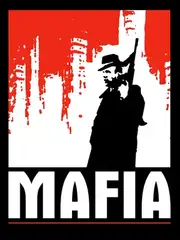

 |
|
| Tiempo de juego | 3m 16s |
| Última actividad | 21/11/2025 14:31:08 |
| Añadido | 10/11/2025 19:28:19 |
| Modificado | 10/12/2025 11:28:04 |
| Estado de finalización | Jugado |
| Librería | Playnite |
| Fuente | |
| Plataforma | PC (Windows) |
| Fecha de lanzamiento | 29/8/2002 |
| Puntuación de la Comunidad | 87 |
| Puntuación de la Crítica | 63 |
| Puntuación de usuario | |
| Género | Adventure Racing Shooter |
| Desarrollador | Illusion Softworks |
| Editor | Gathering of Developers Take-Two Interactive |
| Característica | Single Player |
| Enlaces | Steam GOG |
| Tag | |
Preparate para ponerte el sombrero y el sobretodo. Un juego que, en su día, nos voló la cabeza por lo en serio que se tomaba las cosas.
Estamos en los años 30. La Ley Seca. La ciudad es Lost Heaven. Vos arrancás como Tommy Angelo, un simple taxista tratando de ganarse el pan... hasta que una noche, el destino (y unos tipos con ametralladoras) te ponen en la puerta de la familia Salieri. Y ahí, tu vida cambia para siempre.
Este juego es pura atmósfera. Es un viaje en el tiempo. La música que suena en la radio, los autos (¡esas bañeras con ruedas que apenas doblan!), la arquitectura de la ciudad... todo está puesto para que te sientas ahí.
Lo zarpado era el nivel de detalle. El juego te pedía que respetaras su mundo. ¡La policía te multaba si te pasabas un semáforo en rojo o si chocabas! Tenías que aprender a forzar las cerraduras de los autos de la época (y cada uno era distinto). Era un juego que te pedía paciencia y te pagaba con una inmersión increíble.
Un clásico absoluto. De esos que te cuentan una historia que te queda grabada a fuego. Respeto.